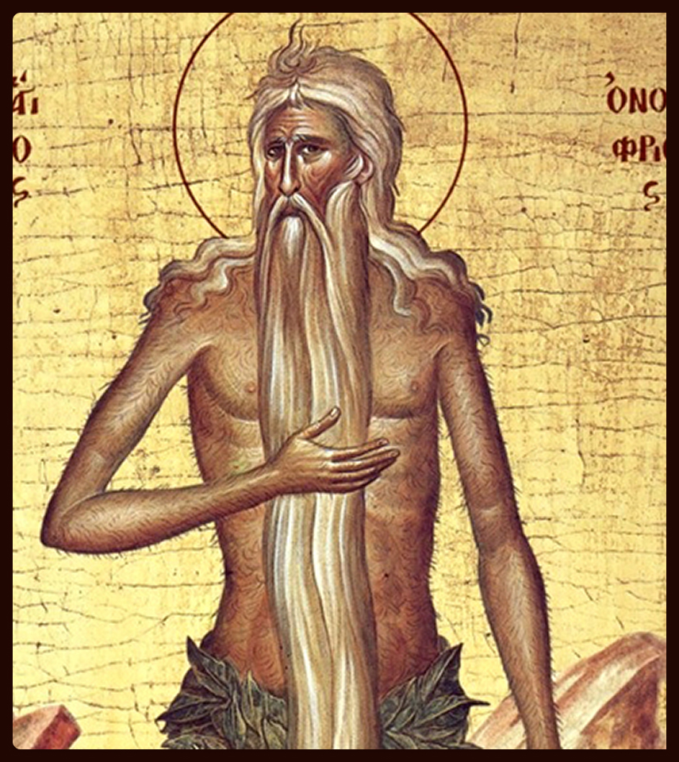
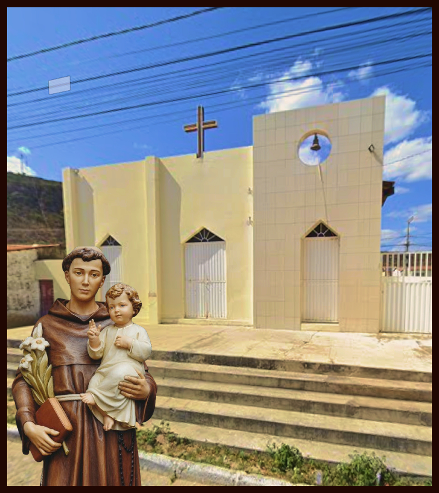

Historia de Santo Onofre

Onofre foi um eremita que viveu no Egito no final do século IV e início do século V. Ele foi encontrado por um abade chamado Pafúncio. Acostumado a fazer visitas a alguns eremitas na região de Tebaida, esse abade empreendeu sua peregrinação a fim de descobrir se também seria chamado a vivê-la.
Pafúncio perambulou no deserto durante 21 dias, quando, totalmente exausto e sem forças, caiu ao chão. Nesse instante, viu aparecer uma figura que o fez estremecer: era um homem idoso, de cabelos e barbas que desciam até o chão, recoberto de pelos tal qual um animal, usando uma tanga de folhas.
Era comum os eremitas serem encontrados com tal aspecto, pois viviam sozinhos no isolamento do deserto e eram vistos apenas pelos anjos. No final, ficavam despidos porque qualquer vestimenta era difícil de ser encontrada e reposta.
No primeiro instante, Pafúncio pôs-se a correr, assustado, com aquela figura. Porém, minutos depois, essa figura o chamou dizendo que nada temesse, pois também era um ser humano e servo de Deus.
O abade retornou ao local e os dois passaram a conversar. Onofre disse a Pafúncio o seu nome e explicou-lhe a sua verdadeira história. Era monge em um mosteiro, mas sentira-se chamado à vida solitária. Resolveu seguir para o deserto e levar a vida de eremita, a exemplo de são João Batista e do profeta Elias, vivendo apenas de ervas e do pouco alimento que encontrasse.
Onofre falou sobre a fome e a sede que sentira e também sobre o conforto que Deus lhe dera alimentando-o com os frutos de uma tamareira que ficava próxima da gruta que era sua moradia. Em seguida, conduziu Pafúncio à tal gruta, onde conversaram sobre as coisas celestes até o pôr-do-sol, quando apareceu, repentinamente, diante dos dois, um pouco de pão e água que os revigorou.
Pafúncio falou a ele sobre seu desejo de tornar-se um eremita. Mas Onofre disse que não era essa a vontade de Deus, que o tinha enviado para assistir-lhe a morte. Depois, deveria retornar e contar a todos sua vida e o que presenciara. Pafúncio ficou, e assistiu quando um anjo deu a eucaristia a Onofre antes da morte, no dia 12 de junho.
Retornando à cidade, escreveu a história de santo Onofre e a divulgou por toda a Ásia. A devoção a este santo era muito grande no Oriente e passou para o Ocidente no tempo das cruzadas. O dia 12 de junho foi mantido pela Igreja, tendo em vista a época em que Pafúncio viveu e escreveu o livro da vida de santo Onofre, que buscou de todas as maneiras os ensinamentos de Deus.
História da nossa paroquia

A história da Paróquia de Santo Onofre, em Junco do Seridó, na Paraíba, está profundamente entrelaçada com a formação do próprio município. Tudo teve início na Fazenda "Unha de Gato", propriedade do fazendeiro Balduino Guedes, cuja implantação por volta de 1892 marcou o surgimento do povoado. O local, inicialmente conhecido como "Chorão", derivou seu nome da fonte de água doce chamada "Mela Bico", onde a ... Continuar lendo...
Nossas Capelas
Santo Antônio

São Tarcísio